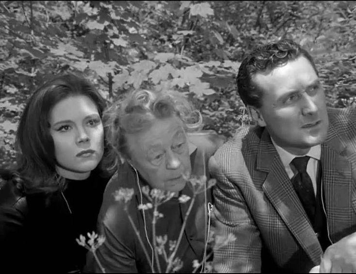

Episode 11: Man-Eater of Surrey Green
A strange arrival from outer space? Strange acting horticulturists? Villagers disappearing one by one, seemingly in a trance? The Avengers are on the case! What evil could be growing in Surrey Green?
